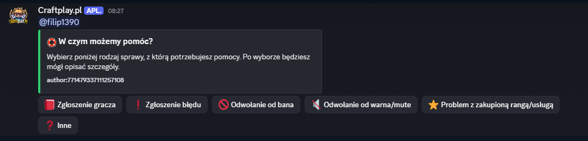
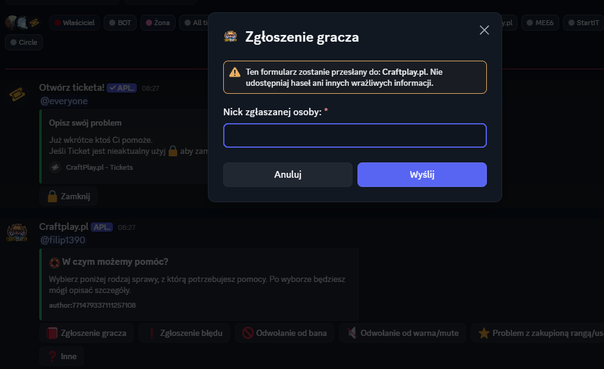
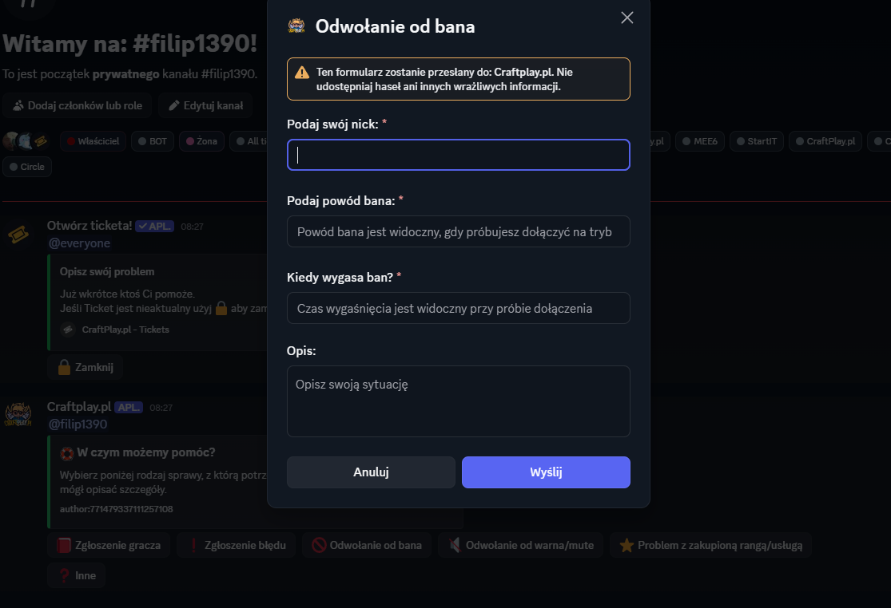
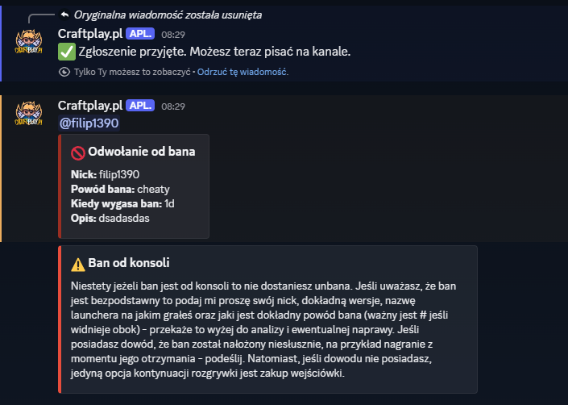
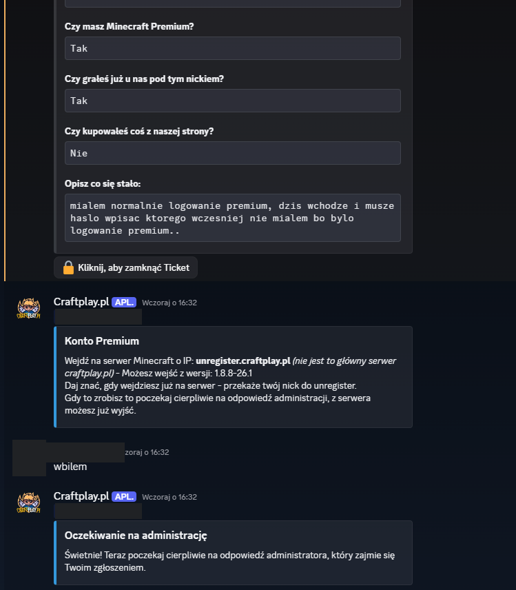
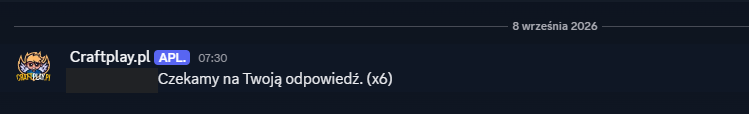
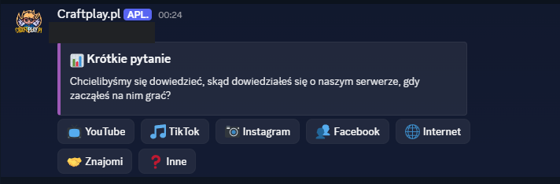
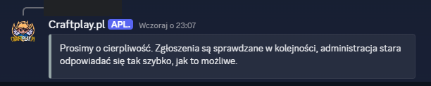
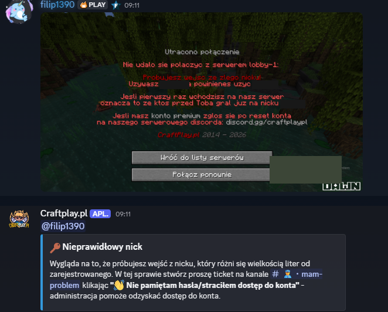

Screenshots submitted with our privileged intent request · app ID 1327026908726296606
These screenshots show the features described in our application, captured on
the single Discord guild the bot runs in (ID 561167627976835082). The interface and all
player-facing text are in Polish, so each screenshot is explained in English below.
Privacy note. Where a screenshot showed a real player, their username and
avatar have been blacked out. Most screenshots were captured on the maintainer's own test
ticket. No player data is published on this page.

1. Help panel. Posted automatically on a new ticket. The player picks the
kind of problem; each button opens a matching form. Only the ticket author can use it —
the author's ID is stored in the embed footer.

2. Report-a-player form. Opened by the first button. The warning banner
tells the player never to share passwords or other sensitive data.

3. Ban appeal form. Collects nickname, ban reason, expiry and a free-text
description. These four answers feed the triage logic shown next.

4. Ban-appeal triage. The bot summarises the submitted appeal, recognises
that the ban was issued automatically by the anti-cheat, and posts the standard explanation
of what evidence the player needs to provide. Test data.

5. Password-reset workflow — why Message Content is needed. The upper part
is the intake form posted by TicketTool, a third-party bot: whether the player owns
a premium account, whether they played before, whether they purchased anything, and a free-text
description. Our bot can only read this because of the Message Content intent. Based on those
answers it selects the right identity-verification procedure — here the premium route — and
confirms once the player reports back.

6. Reminder with counter. When staff are waiting for a reply, the bot posts
a single reminder and updates its counter (x6) instead of flooding the channel.
The player's username is blacked out.

7. Optional survey. Shown once after a completed password reset: "where did
you hear about the server?". Answering is entirely voluntary and only aggregate counts are
kept — no nicknames or user IDs. The player's username is blacked out.

8. Impatience detection. A player wrote a free-text complaint about waiting;
the bot matched it against a keyword list and asked for patience. The reply is limited to once
every five minutes per ticket, and repeated attempts lead to a short timeout. The player's
username is blacked out.

9. Screenshot recognition (OCR). The player attached a photo of the Minecraft
error screen blocking them. The bot read the image in memory, ran OCR locally with
tesseract.js, matched one of three known in-game errors — here a nickname whose
capitalisation differs from the registered one — and replied with the exact fix. The image and
the recognised text are never stored, and nothing is sent to any external service. The
blacked-out boxes inside the game screenshot hide another player's Minecraft nickname.